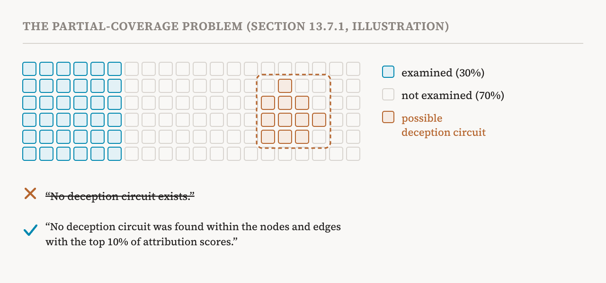

Parts 34 to 36 showed what mechanistic interpretability can do for safety. This part covers the rest of the book's thirteenth chapter, sections 13.5 to 13.7 (pages 119–123): which method suits which safety job, and what can go wrong when interpretability itself is relied on for safety.
Matching methods to safety jobs
Each safety application needs suitable techniques, and not only mechanistic ones. The book summarises six common applications, what matters most for each, and the methods that look most promising. It offers the table both to practitioners deploying systems where safety is critical, as a list of methods to consider, and to researchers, as a list of settings in which to test their methods.
| Application | What matters most | Promising methods |
|---|---|---|
| Monitoring harmful internal traits during use, such as lying or sycophancy | Scalability, robustness | Sparse autoencoders, circuit discovery, probes |
| Auditing models during evaluation, for reward hacking, backdoors or evaluation awareness | Recall on real cases | Behavioural evaluation, probes, automated auditing with language models |
| Shaping capabilities during training, such as keeping out biothreat knowledge | Robustness of what is present or absent | Data attribution and filtering, training-time interventions, longitudinal and scaling analysis |
| Editing wrong, outdated or inappropriate knowledge | Precision, generalisation | Knowledge editing, concept erasure, analysis of low-rank regions of activations |
| Steering away from critically harmful behaviour in deployment | Precision, low compute cost | Steering vectors, prompting |
| Checking whether a model's stated reasons match its computation | Fine-grained analysis | Counterfactual behavioural tests, circuit discovery, activation patching |
The book then links this back to part 31's orientations. Pragmatic interpretability favours methods for immediate intervention without full understanding; ambitious interpretability develops interventions with verified guarantees, such as complete and faithful circuits or models built to be read; developmental interpretability looks for signatures that track how representations, circuits and capabilities develop; interpretability across time builds pipelines to forecast and shape behaviour during training; introspective interpretability develops training that lets models report on themselves; and automated interpretability builds pipelines that work at scale. Together, the book says, they have driven the rapid growth of interpretability methods.
Four kinds of risk
Mechanistic interpretability is often presented as a safety tool, but the book insists that it introduces risks of its own, and sorts them into four kinds.
![Four panels, one per kind of risk, each with the book's example and how soon it is expected. Epistemic risk, current: false confidence from incomplete or unfaithful analysis, such as reporting that a deception circuit was removed while a backup pathway appeared. Operational risk, near-term: tools that fail silently in deployment, such as a steering vector that works on the test set but corrupts the model on different inputs. Adversarial risk, current: methods that enable attacks, such as published editing methods used to inject false knowledge. Opportunity cost, long-term: resources diverted, such as heavy investment in interpretability delaying behavioural safeguards.](../../images/inside-37-risks-en.png)
False confidence
The first kind is epistemic risk: false beliefs about a model's safety. The book calls it perhaps the most insidious: believing a model is safe because certain circuits were analysed, while the dangerous behaviour actually hides in regions nobody examined.
Current methods explain only a fraction of a model's behaviour, and forgetting that leads to false beliefs. The book's hypothetical example: someone reports "we found no deception circuit", but the analysis covered only 30% of the model's computation, so the deception circuit may sit in the 70% left unexamined. The same can happen with features. After safety fine-tuning, a team analyses the 1,000 sparse autoencoder features most related to malicious properties, finds none that causally contributes to deception, and concludes the model is safer. But features with harmless-looking descriptions can still influence deceptive behaviour, and this analysis misses them.

The book names three classic pitfalls, each a gap between two things that are easy to confuse. Reconstructing activations is not reconstructing computation: a sparse autoencoder with low reconstruction loss may rebuild the activation by a different algorithm from the model's own (part 12). A circuit's sufficiency is not its completeness: a circuit that reproduces the behaviour on test examples may miss edge cases, backup pathways or variations that depend on context (parts 18 and 20). And a feature's plausibility is not its faithfulness: a feature with a single, coherent human meaning is not necessarily used by the model's later computation (part 12).
Even a carefully verified explanation may not be the model's true and complete causal account. Interpretability studies, even ambitious ones, work with finite evidence, and several competing explanations can fit everything observed. The book's example is networks trained on group operations, a kind of abstract arithmetic. A 2023 study proposed an explanation of their algorithm based on representation theory. A 2024 study argued that it was incomplete and proposed an alternative based on cosets. And a 2025 study showed that both were incomplete and offered a broader framework that includes both. Even rigorous reverse-engineering, the book concludes, gives the best explanation supported by current evidence, not the one definitive theory.
The remedies are two. First, every result should state its coverage explicitly: what fraction of behaviours, features or computations was examined, and with which tools and their limits. Claims should be worded precisely: "no deception circuit was found within the nodes and edges with the top 10% of attribution scores", not "no deception circuit exists". Second, mechanistic analysis should not be treated as sufficient evidence on its own. Where possible, it should be combined with behavioural testing, adversarial evaluation and formal verification.
Silent failure
The second kind is operational risk. Interpretability tools are developed and tested in controlled settings, and they may work worse in the real world, where inputs are varied, adversarial or unlike anything seen before. Distribution shift is the main threat. Steering vectors extracted from one dataset often degrade on related tasks; a difference-of-means vector that reduces toxicity on curated benchmarks may fail on new slang or in other languages. Sparse autoencoder features learned on training data may fire unreliably on new inputs, giving false negatives or false positives. And circuits validated on curated examples may work differently on other inputs that show the same behaviour.
Worse, these failures are silent. A steering vector that stops working raises no error; it simply stops having an effect. A monitor built on sparse autoencoder features may miss dangerous activations if the features stop tracking their concepts on some inputs. And concept erasure such as PISCES may leave some capability reachable through certain prompts, with no sign that anything failed.
The remedy is to embed interpretability tools in robust deployment frameworks: track their performance on live data, combine them with behavioural safeguards so that one layer catches the failures of another, test them against adversarial inputs designed to make them fail, and design systems that degrade gracefully, switching to conservative, safe responses when a safeguard malfunctions or drifts.
Help for attackers
The third kind is adversarial risk. Interpretability is inherently dual-use: what lets researchers understand, monitor and change a model can also help others get around or manipulate its safeguards. A published circuit analysis may reveal how a model refuses dangerous queries, which lets an attacker with access to the model write queries that do not trigger that circuit. If the sparse autoencoder features used for monitoring become public, attackers can craft inputs that avoid them. Knowledge editing methods such as ROME and MEMIT can inject misinformation as easily as they correct errors, and steering vectors can induce harmful behaviour as easily as they suppress it. Like red-teaming, progress in interpretability strengthens both defenders and attackers.
The remedies are responsible disclosure, weighing the harm before publishing detailed analyses of safety-critical behaviour; several independent safeguards of different kinds; testing systems before deployment against attackers assumed to know the safeguards fully; and, before publishing failure modes of deployed models, working with the developers to fix them first. The book adds a note on openness. This risk is not an argument against open interpretability research. Understanding complex systems has historically strengthened both attack and defence, and openness allows independent scrutiny, replication and the discovery of hidden failures. The dual-use problem is a challenge for responsible deployment, not a reason to restrict the research.
Money spent where it helps least
The fourth kind is opportunity cost. Interpretability is expensive in computation and in human effort, and overinvesting in it at the expense of other safety approaches could leave systems less safe overall. Current methods scale poorly: training cross-layer transcoders, the CLTs of part 13, on a 9-billion-parameter model can already take thousands of GPU-hours, and frontier models are much larger. As capabilities grow faster than tools can scale, the gap between what models can do and what we can analyse widens. The book also describes a "complete understanding" trap. Ambitious interpretability aims at full understanding before deployment, but some argue this may be impractical or even counterproductive: partial understanding plus robust behavioural safeguards may already meet acceptable safety standards for general AI services, and holding back deployment delays useful applications and the real-world feedback that guides safety research.
The book's remedies are more discussion in the AI community about allocating resources; investment spread across interpretability, behavioural evaluation, training methods, deployment infrastructure, monitoring and technical governance; deployment based on rigorously defined practical thresholds rather than complete transparency, except in high-stakes domains; iterative deployment, with effective behavioural safeguards now and interpretability tools added when ready; and, before large investments, estimates of the marginal safety gain compared with other uses of the same resources.
One layer among many
The chapter's summary is its most quotable line. Mechanistic interpretability is not a panacea for AI safety. Researchers, developers and practitioners should recognise the limits of partial or incorrect causal understanding, evaluate interpretability tools rigorously under broad conditions, and combine them with other safety measures. It should be seen as one part of a defence-in-depth strategy, not as a standalone guarantee of safety.
| Risk | What goes wrong | Main remedy |
|---|---|---|
| Epistemic (current) | False confidence from partial or unfaithful analysis | State coverage; word claims precisely; add other evidence |
| Operational (near-term) | Tools fail silently under distribution shift | Track live performance; layer safeguards; fail safely |
| Adversarial (current) | Methods help attackers evade or manipulate | Responsible disclosure; varied safeguards; test against informed attackers |
| Opportunity cost (long-term) | Resources pulled from more protective work | Spread investment; practical thresholds; iterative deployment |
| Term | Meaning |
|---|---|
| Epistemic risk | Believing a model is safe on the strength of incomplete or unfaithful analysis |
| Coverage | How much of a model's behaviour or computation an analysis examined |
| Backup pathway | Another route to a behaviour that appears when the main one is removed |
| Operational risk | Interpretability tools failing when deployed |
| Silent failure | A failure that produces no error or warning |
| Adversarial risk | Interpretability methods being used to attack a model |
| Dual use | Useful for both protecting and attacking |
| Responsible disclosure | Weighing harm, and fixing problems with developers, before publishing them |
| Opportunity cost | The safety benefit lost by spending resources here rather than elsewhere |
| Defence in depth | Several independent layers of protection, so one can catch another's failure |
Next, part 38 closes the series with the book's open problems and its view of the road ahead.